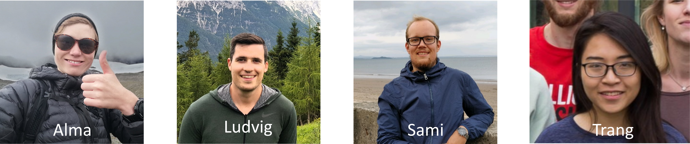
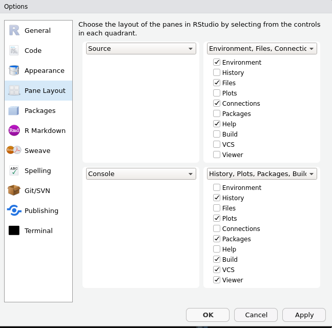
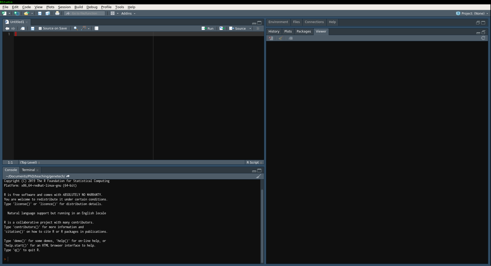

BB2255 Lab Prep
Alma Andersson
Created: 2020-11-19 Thu 15:53
Lab course Introduction
For these slides: https://almaan.github.io/genetech/
Teaching assistants
There are 3 of us, all working at the dept. of Gene Technology
- Alma Andersson (almaan@kth.se)
- Ludvig Larsson (ludvig.larsson@scilifelab.se)
- Sami Saarenpää (sami.saarenpaa@scilifelab.se)

Emails are welcome, but hands-on help with the exercises will be limited to the lab sessions.
NOTE: Tag emails with [BB2255] in the subject line.
For example: "[BB2255] Question about lab 2"
Setup
In this course 3 labs in total, one "main TA" for each:
- Introduction to R [Alma]
- Single Cell RNA-seq analysis [Ludvig]
- Spatial Transcriptomics analysis [Sami]
All labs are in R, we assume that you have:
- access to a computer
- zoom
- no prior knowledge of R
- some familiarity with the terminal
Formalities
Workflow:
- Labs are written in R markdown (more on this later)
- Download exercises –> modify files in-place –> hand in modified file
- You hand in the modified file via Canvas
Deadlines:
- Hand-in: 1 week after scheduled lab session
- Grading : 1 week after hand-in deadline
- Revision : 1 week after grading deadline
NOTE: Late reports will be corrected, but you will get a set of additional exercises to solve. An incomplete report is also considered late.
Working in pairs:
- Encouraged!
- Pair = 2 people
- hand in identical copies
- state both names in : file and comments
Finding Information
All information you need can be found at:
https://github.com/almaan/genetech
- I will refer to this as "the course repo".
- Bookmark or save the link, we will be using it today
- All information is here
A word about zoom
- Make sure you have the latest version : download
- We will use same link as Stefania
- First online edition of this course
- We will try our utmost
- but just keep that in mind
R
What?
- Programming language for "statistical computing"
- Released in 1993
- Open Source –> we like free stuff!
- More than 15,000 additional packages! (add-ons)
- Interpreted language –> very easy to work with!
-
Example C++ : Compiled language
std::vector<double> vec1 = {1,2,3,4}; std::vector<double> vec2 = {5,6,7,8}; double prod = 0; for (int i = 0; i<= vec1.size(); i++){ prod += vec1[i]*vec2[i]; }
Example R : Interpreted language
vec1 <- c(1,2,3,4) vec2 <- c(5,6,7,8) prod <- vec1 %*%vec2
Why?
- One the most popular languages within the bioinformatic community
- Extremely well designed for "data wrangling"
- Has a huge ecosystem of packages for bioinformatic analysis
- Superior graphics system (
ggplot) - don't underestimate this… - We believe it will give you an attractive and useful set of skills
Installation
We will start by installing R, to do this:
- Goto the course repo
- Find the section "R - a primer"
- Click the link listed after "Download R"
- Choose the proper OS and follow the instructions
To test if you have a successfull install:
Open up the terminal and type "R", then press ENTER
You should see something like:
almz :: teaching/genetech » R R version 3.6.1 (2019-07-05) -- "Action of the Toes" Copyright (C) 2019 The R Foundation for Statistical Computing Platform: x86_64-redhat-linux-gnu (64-bit) R is free software and comes with ABSOLUTELY NO WARRANTY. You are welcome to redistribute it under certain conditions. Type 'license()' or 'licence()' for distribution details. Natural language support but running in an English locale R is a collaborative project with many contributors. Type 'contributors()' for more information and 'citation()' on how to cite R or R packages in publications. Type 'demo()' for some demos, 'help()' for on-line help, or 'help.start()' for an HTML browser interface to help. Type 'q()' to quit R. >
Rstudio
What is it?
- When editing code it's common to use an IDE (Integrated Development Environment)
- Similar to MATLAB Studio
- IDEs are designed to facilitate programming; there are plenty of them
- Personal favorite is Emacs (first release 1976)
- We will be using Rstudio
- an IDE specifically designed for R
- also very user friendly
- In short, Rstudio is the tool you will be using to edit your code.
Installation
To install Rstudio, follow the steps below:
- Head back to the course repo and the "R - a primer" section
- Click the link listed after "Download Rstudio"
- Choose the proper OS and follow the instructions
- Shout at me if you experience issues!
If you have a successful install, the Rstudio program should be available for you to open. The icon looks something like:

If you don't have a GUI - from the terminal, type in rstudio and the program should open up
Exploring Rstudio
To get an idea of how Rstudio works, we'll have a quick look at it.
So, Open up Rstudio.
There are a lot of things you can customize, for example: color schemes, fonts, pane layouts, keybindings etc.
To change any of these : Tools–>Global Options
Pane Layout
You may use whatever settings you want, but I recommend - to make things easy - that you use the same pane layout as me:

Features of Rstudio
- Create a new file by: File –> New File –> R Script
- You should see something like this:

- There are some key features I want to point out: Source, Console, Terminal, and Environment
- One more feature (knitting) that I will come back to
The Labs
Accessing the material
Git and GitHub
- All lab material is hosted at GitHub (the course repo).
- Git is a system for distributed version control - GitHub is one (nice) interface
- GitHub is widely used among bioinformaticians and computational biologist. I host all my software there
Download
To create a local copy of the labs on your own computer:
- Open a terminal window
- Go to a directory where you want the copy to be created
- Run the command:
git clone https://github.com/almaan/genetech.git
You should now have a folder called genetech in your directory. Make sure such is the case.
Installing packages
- Packages allows you to execute complex actions without the need to write 1000s of lines of code –> NICE!
- Dependencies between packages can cause a lot of errors –> HEADACHES..
- I have written an installation script that should take care of this for you (fingers crossed..)
- Open
rstudio - load the file "
genetech/labs/prep/install-packages.R" - Run the script, by for example doing:
- Ctrl + A
- Ctrl + Enter
Working with the code
To get an idea of how you work with the code, we will have a look at Lab 1
- Go to Rstudio
- Do: File–>Open File
- Choose the file "
genetech/labs/ex1/main.Rmd"
Changing author name
At the top of the file you will see:
--- title: "Lab 1 - Introduction to R" author: "Alma Andersson" date: "26-11-2020" output: tufte::tufte_html: default ---
Change the author field to your name(s)
Code chunks
{r,eval = TRUE, echo=TRUE}
# bind the values 1337 to the variable fancy_name_1
fancy_name_1 <- 1337
# print fancy_name_1
print(sprintf("fancy_name_1 is : %d",fancy_name_1))
- The "boxes" with code are called chunks.
- If you "run" a chunk (press green arrow) the code inside will be executed
- This is where you will put in code (when prompted)
- Don't change the settings (in curly brackets)
Knitting
- R markdown –> html and pdf documents.
- This process is called knitting
- To knit your document, press the yarn symbol that says "Knit"
- Your rendered document should show up in the "Viewer" pane
- You should always hand in a knitted report (html)
- If your document does not knit successfully, something is wrong.
A demo
Wrap up
- First lab session: 13:00-17:00, 26/11/2020
- Questions are welcome!
- We will hang around a bit after this session.
Thanks for the attention!

(Burrow owls - check'em out!)